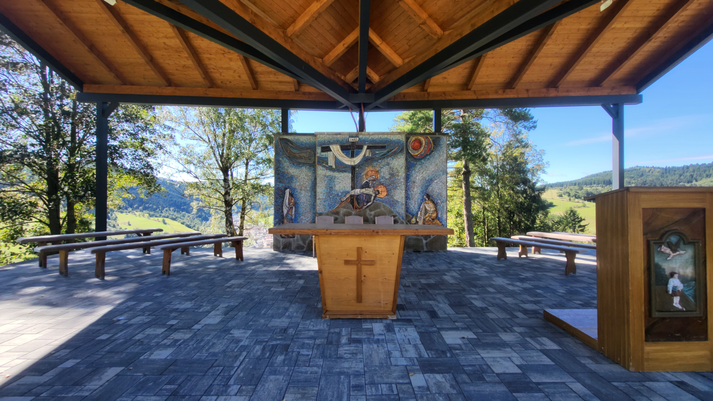
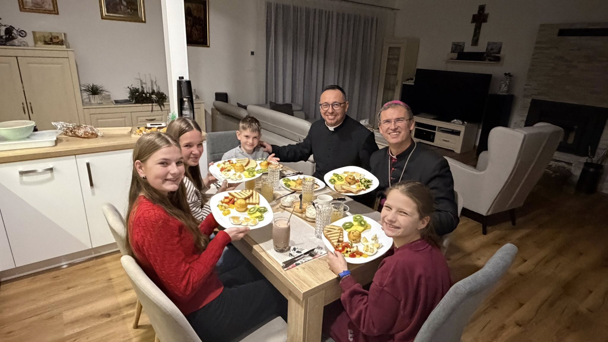

Amfiteáter na Kalvárii
Postavený nový amfiteáter na Kalvárii.

Pečenie Vianočiek
Každročné pečenie Vianočiek je už súčasťou tradície farnosti.

Kolačkovský kostol
Kolačkovský kostol, ktorý bol obnovený v rokoch 2018 až 2023.
Informácie o farnosti
Správca: Róbert Gurčík
Kostol: sv. Michala Archanjela
Kalvária: Sedembolestná Panna Mária
Kaplnka: Sv. Ján Nepomúcky
Súčasnosť a modernizácia
V rokoch 2018 až 2023 prešiel kostol rozsiahlou rekonštrukciou. Vďaka automatizácii je označovaný za prvý "smart" kostol v okrese.
Konsekráciu vykonal Mons. Ján Kuboš (6. máj 2023).
Oficiálna stránka obce